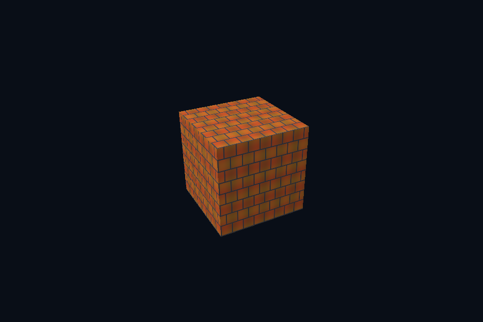

第 38 课 · sRGB、线性光照与显示编码 · Vulkan 原生
54 课目录 · 对照精讲 · 上一课 · 下一课
本课目标与先修
学习目标：解释“sRGB、线性光照与显示编码”解决的问题，找到实际对象和参数，运行对应实验并用数据/画面证明。先完成前一课，并能说明它交付的对象与完成条件；本课在该依赖上增加新契约。
为什么需要这一层
颜色编码是整个数据链路的约定。albedo 通常从 sRGB 解码到线性参与光照，normal/roughness/metallic/AO 是线性数据；最终显示再编码一次。文件扩展名不决定纹理用途。
Vulkan 原生 的对象、参数与执行推导
对比相同图片的 UNORM 与 SRGB image view/format 路径，shader 参与线性计算后手动显示编码。GPU blit 对 sRGB 格式的颜色处理也应与规范和参考值一致；数值 mip 实验使用 UNORM 以便逐 texel 对照。
对照 DirectX 12：相同问题的另一种分工
需要合法的 typeless resource/typed view 组合才能解释同一格式族；本课 sRGB SRV 与普通 UNORM 是不同读取约定。sRGB mip 的 CPU 参考先解码、平均再编码，不能直接平均已编码 RGB；alpha 仍是线性数据。
关键参数与可检查不变量
先为每项指出源码中的创建/绑定位置，以及证明它成立的实际日志、字节或图像。数值中的设备限制以查询为准；固定实验尺寸不当作所有设备的上限。
nvpro_core2 框架对照
框架的 UI 显示与场景输出可能各有编码假设。比对时先固定目标格式和最终编码，避免场景先 gamma、UI 又 gamma。
这部分是原生 Vulkan 各课的框架对照，框架可运行入口仍为原有六课。如果本节需要新接入工作，会按正文说明；不把原生实验当作已完成的框架实现。
运行与实际检查
从合集根目录执行；普通图形程序 Esc 退出，设备/计算/诊断程序输出结果后结束。从“开始学习.cmd”进入本页时，表格可直接点击运行。
cmake --preset vulkan-native
cmake --build --preset vulkan-native-debug --target vk35_srgb_view --parallel 4
.\Vulkan\native\build\bin\Debug\vk35_srgb_view.exe
ctest --preset vulkan-native-debug -R "^vk35_srgb_view$" --output-on-failure
检查三个层次：创建/绑定/提交的接口约束；数据读回或目标画面；资源使用结束后的回收。诊断实验用合法信息或查询证明渠道可用，不故意保留 API 错误。图形 smoke 的像素检查与数值实验的逐项检查不同，具体实现见源码。
关键实现：从当前源码定位
来自 Vulkan/native/common/advanced_labs.cpp，第 354—397 行。下列是当前仓库的局部切片，可能在函数中间结束；完整上下文请打开文件，切片不作为单独可编译程序。
struct GpuTexture {
VkContextRef c;
VkImageResource image;
VkSampler sampler{};
VkImageView selectedView{};
VkFormat format{};
std::vector<Pixels> reference;
explicit GpuTexture(
VkContextRef context, Pixels pixels, bool mips, bool srgb = false, bool clamp = false)
: c(context) {
reference = mips ? mipReference(pixels, srgb) : std::vector<Pixels>{pixels};
uint32_t levels = uint32_t(reference.size());
format = srgb ? VK_FORMAT_R8G8B8A8_SRGB : VK_FORMAT_R8G8B8A8_UNORM;
if (mips) {
VkFormatProperties properties{};
vkGetPhysicalDeviceFormatProperties(c.physical, format, &properties);
VkFormatFeatureFlags required = VK_FORMAT_FEATURE_BLIT_SRC_BIT |
VK_FORMAT_FEATURE_BLIT_DST_BIT |
VK_FORMAT_FEATURE_SAMPLED_IMAGE_FILTER_LINEAR_BIT;
require((properties.optimalTilingFeatures & required) == required,
"Format cannot generate linear-blit mip chain");
}
image.init(c,
{pixels.width, pixels.height},
format,
VK_IMAGE_USAGE_SAMPLED_BIT | VK_IMAGE_USAGE_TRANSFER_SRC_BIT |
VK_IMAGE_USAGE_TRANSFER_DST_BIT,
VK_IMAGE_ASPECT_COLOR_BIT,
levels);
VkBufferResource upload;
upload.init(c, pixels.rgba.size(), VK_BUFFER_USAGE_TRANSFER_SRC_BIT);
upload.upload(pixels.rgba.data(), pixels.rgba.size());
immediate(c, [&](VkCommandBuffer cmd) {
for (uint32_t i = 0; i < levels; ++i)
imageDependency(cmd,
image.image,
i,
VK_IMAGE_LAYOUT_UNDEFINED,
VK_IMAGE_LAYOUT_TRANSFER_DST_OPTIMAL,
VK_PIPELINE_STAGE_2_NONE,
0,
VK_PIPELINE_STAGE_2_COPY_BIT | VK_PIPELINE_STAGE_2_BLIT_BIT,
VK_ACCESS_2_TRANSFER_WRITE_BIT);
VkBufferImageCopy copy{};
阅读时按“前置对象 → 参数/布局 → 录制/调用 → 完成/可见性 → 释放”五步标注。共享 helper 减少重复代码，但不会取消每课的 API 契约。
受控修改实验
给粗糙度贴图使用 sRGB 读取，能否靠 normalize 或调曝光恢复正确粗糙度？
先记录预测，再只改一个因素；保留基线与修改后的输出。不要同时改变 shader、资源范围和同步，这样即使结果变好也无法归因。
参考推导与通过标准
不能。输入标量被非线性改写，曝光只改变输出，不能还原材质参数。先纠正数据格式与用途。
常见失败与排查顺序
把所有 PNG 都当颜色、对 HDR 中间结果提前 tone-map，或最终重复编码，会让跨 API 亮度比较失去意义。
先看第一条错误和当前执行路径，再看实际数据/绑定，最后看 shader 与画面。需要 GPU 证据时抓取正常交互帧；仅四帧的 smoke 适合自动检查，不适合手动抓帧。
自测与本课交付
能否不看源码回答：给粗糙度贴图使用 sRGB 读取，能否靠 normalize 或调曝光恢复正确粗糙度？
提交一份简短记录：输入与假设、唯一修改、预期、实际证据、原因、是否恢复基线。如果只能复述函数名而说不清何时允许访问/释放，先回到本课的数据流。
官方阅读位置与当前工程差异
指定 Vulkan 教程对应位置。DX12 路线按同一概念顺序建立映射，其对象与约束以 Microsoft 文档和本后端代码为准。49—54 课包含在基础/compute 之后加入的工程扩展。
版本与资料说明 · 调试 · 功能完成度
固定输入的实际 GPU 读回
